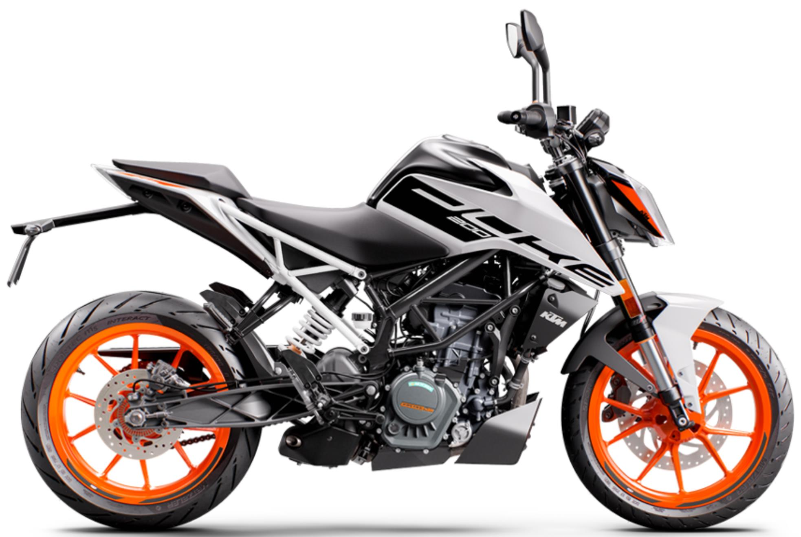
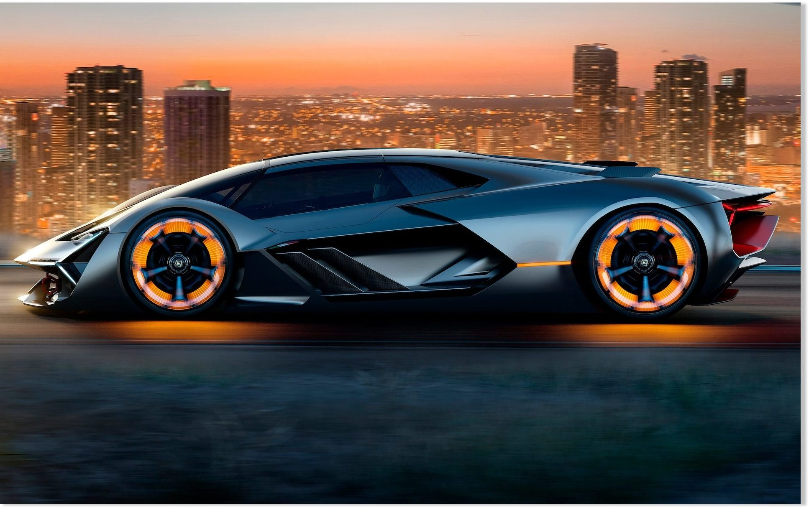
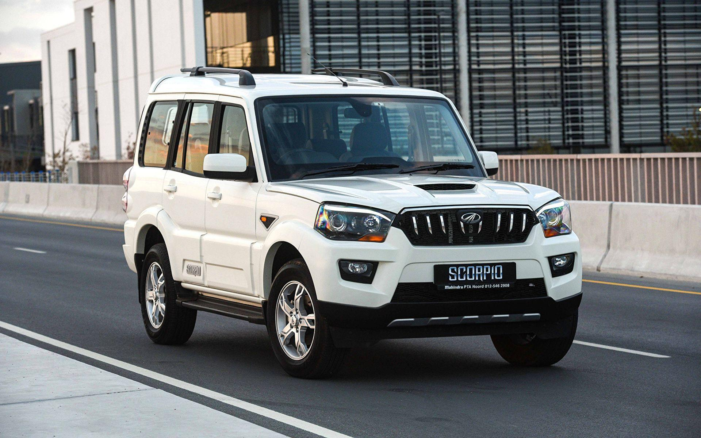
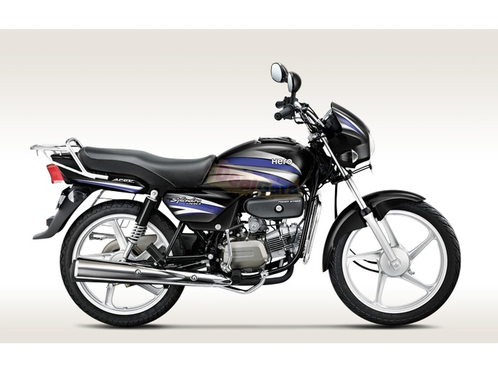

The KTM 200 Duke is a 199.5 cc (12.17 cu in) single-cylinder standard motorcycle made by KTM since 2012. It has a four-stroke, spark-ignition liquid-cooled engine. It has six-speed gearbox and a cable actuated multi-disc clutch. The bike has an underbelly exhaust and a three-chamber silencer positioned close to its centre of gravity.
Lamborghini has created the world's first self-healing sports car. The Terzo Millennio, which translates as third millennium in Italian, has the ability to detect and repair cracks in its body work. Using sensors the car can conduct its own health check to detect any damages and self-repair itself by filling the crack with nanotubes to prevent it spreading. The super car was created in collaboration with researchers from the Massachusetts Institute of Technology (MIT) in Boston. Stefano Domenicali, manager and CEO of Lamborghini, said: "Collaborating with MIT for our research and development department is an exceptional opportunity to do what Lamborghini has always been very good at - rewriting the rules on super sports cars. "Now we are presenting an exciting and progressive concept car. "We are inspired by embracing what is impossible today to craft the realities of tomorrow; Lamborghini must always create the dreams of the next generation."
The Mahindra Scorpio is a mid-size SUV manufactured by the Indian automaker Mahindra & Mahindra since 2002. It was Mahindra's first model to be built for the global market. The Scorpio was conceptualized and designed by the in-house integrated design and manufacturing team of Mahindra & Mahindra. The car has been the recipient of three Indian awards, including the "Car of the Year" award from Business Standard Motoring as well as the "Best SUV of the Year" and the "Best Car of the Year" awards, both from BBC World's Wheels.
The Hero Honda Splendor is an entry level motorcycle manufactured in India by Hero Honda. After Separation of Joint venture of Hero Honda, Now it is manufactured by Hero MotoCorp . It has an electronic ignition and a tubular double cradle type frame with a 97.2 cc (5.93 cu in) engine. The engine is based on the Honda Cub C100EX with a similar bore and stroke of 50 mm x 49.5 mm (1.97 in x 1.95 in). As of 2009, Splendor models were selling at a rate of one million units per year.
The Tata Nano was a compact city car manufactured and marketed by Indian automaker Tata Motors over a single generation, primarily in India, as an inexpensive rear-engined hatchback intended to appeal to current riders of motorcycles and scooters — with a launch price of ₹100,000 or US$1,300 on 10 January 2008.